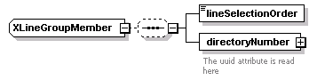
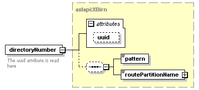

| diagram |  | ||
| namespace | http://www.cisco.com/AXL/API/10.5 | ||
| children | lineSelectionOrder directoryNumber | ||
| used by |
|
||
| source | <xsd:complexType name="XLineGroupMember"> <xsd:sequence minOccurs="0"> <xsd:element name="lineSelectionOrder" type="axlapi:XInteger" minOccurs="1" maxOccurs="1"/> <xsd:element name="directoryNumber" type="axlapi:XDirn" minOccurs="1" maxOccurs="1"> <xsd:annotation> <xsd:documentation>The uuid attribute is read here</xsd:documentation> </xsd:annotation> </xsd:element> </xsd:sequence> </xsd:complexType> |
| diagram | |||
| type | axlapi:XInteger | ||
| properties |
|
||
| source | <xsd:element name="lineSelectionOrder" type="axlapi:XInteger" minOccurs="1" maxOccurs="1"/> |
| diagram |  | ||||||||||||
| type | axlapi:XDirn | ||||||||||||
| properties |
|
||||||||||||
| children | pattern routePartitionName | ||||||||||||
| attributes |
|
||||||||||||
| annotation |
|
||||||||||||
| source | <xsd:element name="directoryNumber" type="axlapi:XDirn" minOccurs="1" maxOccurs="1"> <xsd:annotation> <xsd:documentation>The uuid attribute is read here</xsd:documentation> </xsd:annotation> </xsd:element> |